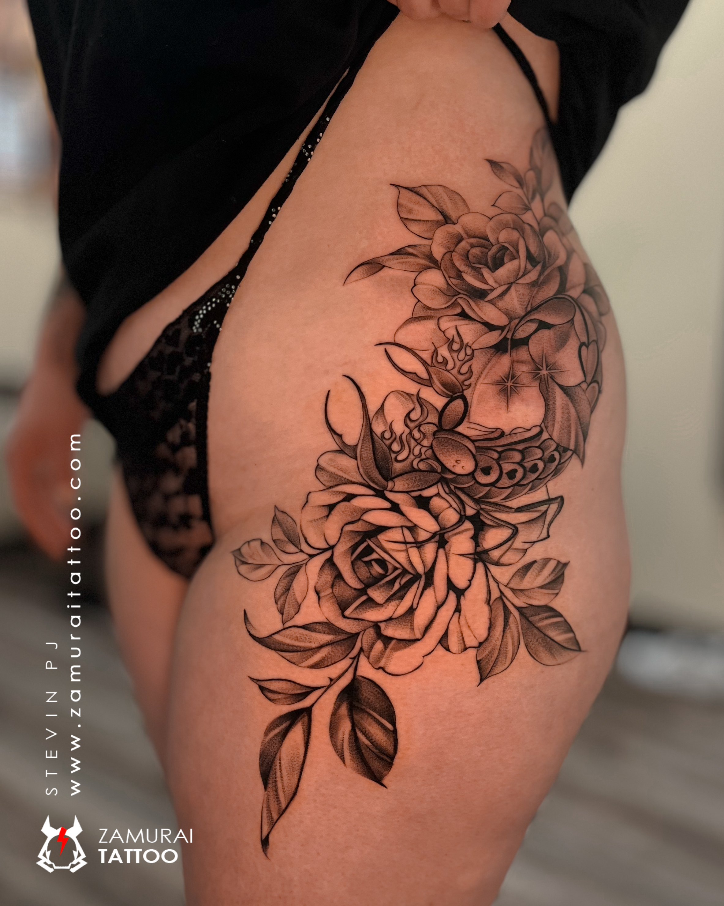

Custom tattooingDotwork & Pepper Shading
Dot-based texture and pepper shading can create gradients, depth and distinctive surfaces. Discuss the scale and contrast needed for your concept.
Reference & placement
Share a clear reference and tell us the body placement, approximate dimensions and whether the design is flexible. These details help us discuss readability, scale and session planning.
Made for you
We’ll discuss the concept, placement, practical expectations and next steps before confirming an appointment.
Questions to consider
Can you customise a reference?
Yes, bring your reference and explain which parts matter most. We can discuss a custom direction and what is realistic for the chosen size and placement.
What should I send when enquiring?
Include the style, placement, approximate size, reference image and any preferred dates. Avoid sending someone else’s private information.
How do I book?
Use the WhatsApp enquiry link to discuss the design before confirming the session.
Have an idea in mind?
Tell us the style, placement and approximate size.